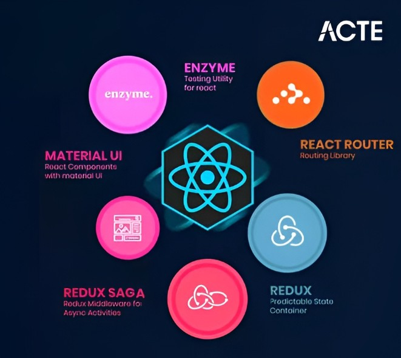

¡Hola! Soy Iris Ccallomamani
Desarrolladora Front-End Trainee | Apasionada por la Accesibilidad y el Código Limpio
"Transformo ideas en una experiencia web dinámica, accesible e innovadora."
💡 Sobre Mí
Soy una desarrolladora Front-End en constante formación a través de Skillnest, centrada en la creación de interfaces web modernas y adaptables. Mi objetivo es construir soluciones digitales que no solo se vean bien, sino que ofrezcan una excelente experiencia de usuario (UX) y sean accesibles para todas las personas.
Me defino como una persona resiliente, analítica y autodidacta, apasionada por resolver problemas cotidianos mediante tecnología semántica y estructurada.
🎯 Mis Pilares de Desarrollo
Desarrollo Front-End Inclusivo y Accesibilidad (A11y)
Mi enfoque principal es construir interfaces donde la accesibilidad no sea una opción secundaria, sino la base del diseño. Me apasiona crear experiencias web adaptadas a la neurodiversidad y con bajo nivel de fricción cognitiva.
Diseño Responsivo y Ergonomía Digital
Me interesa garantizar que cualquier producto web funcione con fluidez y naturalidad en múltiples dispositivos (móvil, tablet, escritorio), aplicando metodologías Mobile-First.
Código Limpio y Semántico
Valoro la arquitectura estructurada, aplicando la separación de responsabilidades (HTML semántico + CSS modular + JavaScript funcional) para facilitar el mantenimiento y la escalabilidad del proyecto.
Tecnología con Impacto Social
Busco colaborar en proyectos digitales donde el código responda a necesidades humanas reales, transformando problemas cotidianos en herramientas digitales intuitivas.
🧰 Tecnologías y Habilidades
Herramientas y tecnologías que utilizo para construir experiencias web accesibles y funcionales.

HTML5 Semántico
Uso de elementos HTML5 como <header>, <nav>, <main>, <article>, <section> y <footer> para crear estructura significativa. Esto mejora la accesibilidad para lectores de pantalla, SEO y la comprensión del contenido por navegadores y asistentes tecnológicos.

CSS3 y Diseño Responsivo
Dominio de CSS moderno incluyendo Flexbox, CSS Grid, media queries y animaciones. Implementación de diseños que se adaptan fluidamente a cualquier dispositivo, asegurando una experiencia consistente desde móviles hasta escritorios.

JavaScript ES6+
Programación en JavaScript moderno usando arrow functions, destructuring, spread/rest operators, async/await, y manipulación del DOM. Creación de interactividad dinámica y funcionalidades que mejoran la experiencia del usuario.
.png)
Accesibilidad Web (A11y)
Implementación de WCAG 2.1, ARIA labels, navegación por teclado, contraste de colores adecuado y etiquetas semánticas. Enfoque en crear experiencias inclusivas para personas con discapacidades visuales, motoras y cognitivas.

Git y Control de Versiones
Gestión de código con Git usando branching, merging, pull requests y resolución de conflictos. Colaboración efectiva en equipos mediante GitHub, incluyendo GitHub Pages para despliegue de proyectos estáticos.

React.js En Desarrollo
Componentes funcionales, hooks (useState, useEffect), contexto y gestión de estado. Actualmente profundizando en ecosistema React para crear aplicaciones SPA más complejas y escalables.
📂 Proyectos Destacados

NeuroMundo - Red Comunitaria e Inmersiva para Familias TEA
Plataforma comunitaria pseudónima dedicada a familias de personas en el Espectro Autista. Ofrece intercambio de estrategias, asistencia inteligente y simulación inmersiva VR para mitigar el estrés familiar y el subdiagnóstico.

Campaña Influenza - Evolución del Aire y Prevención Equitativa
Plataforma educativa sobre calidad del aire intradomiciliario e historia epidemiológica en Chile desde 1990. Democratiza la prevención ofreciendo protocolos adaptados a todo presupuesto e interactividad anti-desinformación.
🧪 Ejercicios Prácticos y Laboratorios
🌮 Menú Interactivo
Interfaz dinámica con manipulación del DOM para gestionar compras y efectos interactivos en tiempo real.
🔵 Catálogo Interactivo con Filtros
Ejercicio de manipulación de arrays para renderizar todo tipo de productos dinámicamente.
🎬 Presentación
En este video muestro quién soy, mi proceso de aprendizaje y el funcionamiento práctico de mi proyecto principal.
📬 Presente en Redes
¿Tienes una consulta, propuesta de proyecto o quieres conectar? Estoy disponible para conversar.